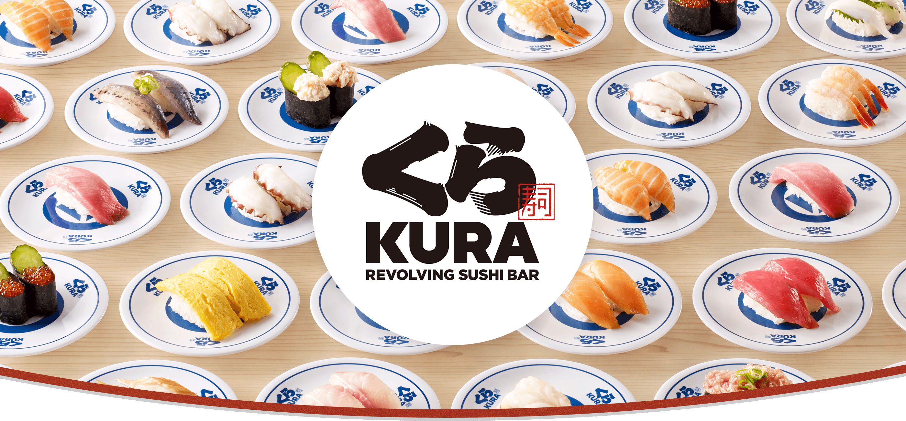
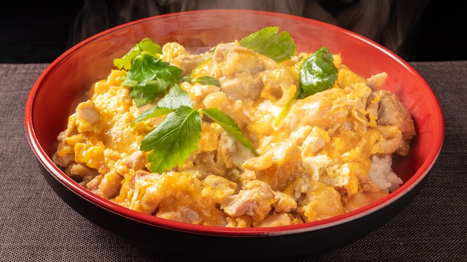
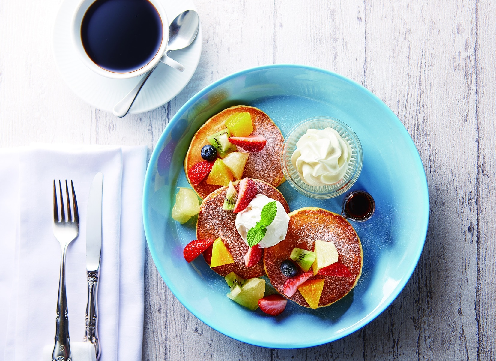

1.
Kura Sushi Sunshine 60 Street
〒170-0013 Tokyo,
Toshima City, Higashiikebukuro, 1−29−1
At Kura Sushi, one of the most popular conveyor-belt sushi restaurants, you can enjoy many different sushi at affordable prices. With dishes starting from just 110-150 yen. Plus, the more you eat, the more chances you have to win a Gachapon or capsule filled with a keychain. A clear plastic lid covers each sushi plate on the conveyor belt for hygiene purposes.
Recommended Items: Ikura sushi

2.
Nakau - Ikebukuro Sunshine
〒170-0013 Tokyo, Toshima City,
Higashiikebukuro, 1−28−1
Nakau is a popular Japanese fast-food restaurant. This option is perfect for busy people who want a fast, delicious, and budget-friendly meal. Oyakodon (a bowl of rice topped with chicken and egg) starts at 450 yen. Nakau's Oyakodon is the most delicious Oyakodon I had at this cheap price.
Recommended Items: Oyakodon

3.
Toshimaya
〒170-0013 Tokyo, Toshima City,
Higashiikebukuro, 1-22-14
Toshimaya serves tasty ramen to customers' preferences. Customers can choose how hard or soft the noodles are, the taste of the soup (strong to light), and how much chicken oil is in the ramen. This store has a special-price ramen for only students (650 yen). Moreover, there is free rice for all you can eat until 9 PM every day. This is a nice deal for students like us!
Recommended Items: Max Ramen

4.
Ikebukuro Pastakan
〒170-0013 Tokyo, Toshima City,
Higashiikebukuro, 3-1-1, Alpa, Floor B1
Ikebukuro Pastakan is an okonomiyaki and monja restaurant where you can try making okonomiyaki yourself with how-to instructions at the table. I had a lot of fun cooking okonomiyaki, which was so delicious! But if you are in a hurry, you might not want to cook it because it takes time.
Recommended Items: Mix Okonomiyaki

5.
Cafe La Mille Sunshine City
〒170-0013 Tokyo, Toshima City,
Higashiikebukuro, 3-1-2, Alpa, 1st Floor
This cafe is located on the 1st floor of Sunshine City. The desserts and drinks are tasty and perfect for sweet tooths. This shop not only serves sweets but also many delicious foods. So, you can have lunch here and end your meal with beautifully presented cakes and drinks. Cremia Soft Cream is unique and famous. It is also sold at the airport.
Recommended Items: Cremia Soft Cream
